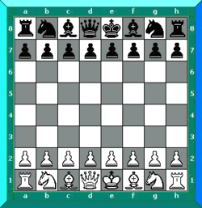

PNG står för Portable Network Graphics. Bildformatet är främst populärt för icke fotografiska bilder. PNG togs fram som en ersättare för GIF, och är både kraftfullare och effektivare. Här är en PNG-bild:
GIF står för Graphics Interchange Format. GIF-formatet innehåller endast 256 färger. Här är samma bild i GIF-format:
Moving-GIF är en GIF som blivit animerad och rör sig. Exempel:

JPEG står för Joint Photographic Experts Group och är bra för fotografiska bilder. Dock är JPEG olämplig för ritningar eller datorskapade bilder. Exempel:
Ibland kan en bild som man vill använda till sin hemsida inte ha samma bakgrund som hemsidan. Detta kan se ganska fult ut. Därför kan endel bild-format hantera genomskinlighet som gör att bakgrunden av bilden blir genomskinlig. Här har vi två bilder, en som har genomskinlig bakgrund och en som inte har det.
Sammanflätade GIF-bilder lagrar icke angränsade linjer tillsammans vilket gör att när bilden läses in så är den först suddig för att bli mer och mer tydlig och i fokus i takt med att mer bildinformation lästs in. Sammanflätade bilder passar bäst för större bilder utan text då texten lätt blir oläslig.
Progressivitet gör så att en bild snabbt kan hämtas i låg upplösning för att sedan hämta hem resten av bilden för att kvalitén ska bli bättre.
Animation är när en bild rör på sig. En animation skapas genom att lägga flera bilder efter varandra.
Bitdjup är hur mycket färg som kan lagras i varje pixel. Om en pixel enbart hade bitdjupet 1 skulle den bara kunna ha två färger. Bitdjup 8 kan ha 256 färger. Detta är då direkt kopplat till filstorleken. Om en bild som är 100x100 pixlar stor skulle ha bitdjup 1 skulle färgerna ta upp 100*100*2=20000, om bitdjupet skulle vara 8: 100*100*256=2560000. Detta stämmer säkert inte till 100% men principen är rätt.
Ju högre komprimeringsgrad en bild har ju mindre blir filstorleken, kvalitén försämras också.